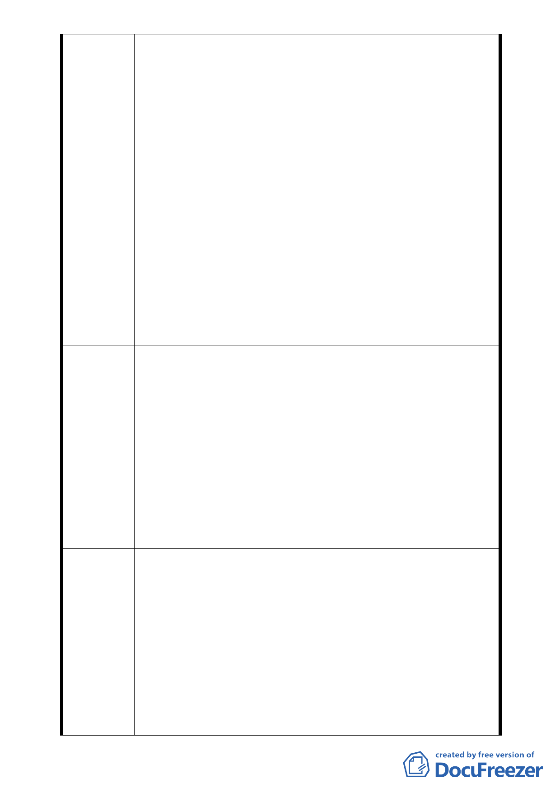

難疏散之功能極為有限。救災避難最積極之做法莫如不
使災害發生之可能性。防災避難功能不彰，此其四。
五、特定專用區內允許使用組別項目之評估
1、第六組社區遊憩設施：已有登山走道、涼亭、座椅、洗
手臺、路燈之設施，變更與否並不影響其功能及使用。
2、第八組社會福利設施、第十四組人民團體、第十五組社
教設施、第十六組文康設施等，目前慈惠堂均已具備且
經常辦理各項活動，都市計畫變更與否不受影響，依然
正常運作。
3、第十七組日常用品零售業、第二十一組飲食業、第二十
二組餐飲業 ... 等。福德街上之店舖均為零售業、飲食
業與餐飲業，再於慈惠堂內設立此種行業，實為多餘，
且帶來環境髒亂。
4、第四十四組宗祠及宗教建築。慈惠堂大殿甚為雄偉莊嚴，
如再建宗祠，純為陪襯角色，有無必要值得商榷。如假
宗祠之名實為靈骨塔則為萬萬不可。蓋人鬼殊途、神鬼
兩隔，一則褻瀆神明，二則影響居民心理健康，實為不
智之舉，必引起居民激烈反彈，此其五。
維持現狀，不必變更都市計畫。因不影響現有功能及運作。
1、綜觀本案都市計畫變更方案，看似冠冕堂皇，實則毛病百
出，相互矛盾、荒唐至極。
2、大凡一項都市計畫方案之變更，首先要考慮周圍之公共設
施及環境是否能配套及有改善之空間。不能只考慮變更之
建議辦法
主體。慈惠堂周圍已無改善空間可言，實不宜變更以維持
現狀為宜。(因現有之功能不受影響)。如舉辦公益活動建
請政府主管部門給予專案補助。
3、慈惠堂範圍內部分建物係屬違建，存在有十餘年之久。政
府主管部門未見取締處理，而以變更都市計畫方法予以就
地合法化，此舉實屬玩忽及怠惰。此風不可長。建請查處
失職人員以儆效尤。
一、 本案變更係為導正民間宗教事業，納入都市發展管制，
俾改善整體環境，延續公益服務熱忱，提供社會服務，
創造市民福祉。
二、 在交通方面，請規劃單位就細部計畫變更為計畫道路部
專案小組
審查結論
分，是否全線納入變更研提修正方案，併大眾運輸管理
計畫、交通改善計畫等，續提大會討論。
三、 有關因舉辦宗教活動衍生噪音、施放煙火、環境髒亂等
問題，請市府逕依消防及環保等相關法令規定辦理。
四、 有關水保問題未來基地新建開發時，須先提出水土保持
計畫送請市府建設局核准，始得依建築法相關規定辦理
動工。
-9-